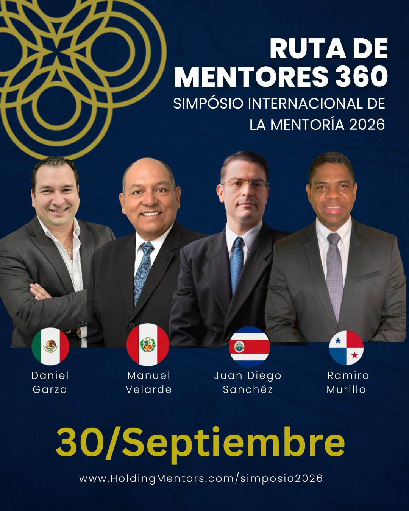

Encontros RGM · Simpósio Internacional
Simpósio Internacional de Mentoria 2027
Brevemente: informação 2027
Edição anterior
O que aconteceu em 2026
Rota de Mentores 360, Simpósio Internacional de Mentoria 2026: quatro jornadas, em espanhol, inglês e português, com convidados de vários países.




Simpósio 2027